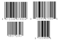
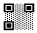
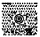
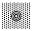

Building Automation
Industrial Automation
Power Automation & Safety


Bangladesh Distributor
Code Readers / OCR
Code Readers can read 2D codes or bar codes and are available in installed or hand-held models.
| Introduction | Features |
| Principles | Classifications |
| Engineering Data |
|
| Explanation of Terms | Troubleshooting |
Related Contents
- Code Readers / OCR
What Is a Barcode?
According to the definition by ANSI (American National Standards Institute), a barcode is a display of information in the form of bars (black portions) and spaces (area between the bars) of varying widths.
Barcodes first emerged in the 1970s, and have come to be employed in a variety of different industries and applications, beginning with the fields of distribution and logistics.
There are a number of varieties of barcodes such as the JAN/EAN codes, CODE128 which are used to manage barcodes for POS, and CODE39 which is used extensively in the industrial field ,and NW-7 which is used in distribution. These barcodes are all governed by ISO/IEC international standards.
When the quality of the barcode printing is not good, the data may be read incorrectly, so it is important to take care in printing labels etc.
Features of Barcodes
Highly flexibility due to its widespread use internationally
Indespensible identification system for international transport, POS, etc.
High Speed Processing
An effective tool for classification processes in high speed production lines etc.
Great variety of models
There are a variety of different readers, including the Pen model, Handy model, Stationary model, CCD model, laser model and camera model etc.
Visible Information
By printing characters in addition to the barcode, it is possible to confirm information just by looking at it.
Major Types and Application of Barcodes
| Type | Pattern | Characters | Application | International standards |
| JAN/EAN |  | Numbers | POS Barcodes | ISO/IEC15420 |
| CODE39 | Numbers, alphabet, partially used symbols | Widely used in industries | ISO/IEC16388 | |
| Codabar (NW-7) | Numbers, Stop codes (A to D) Symbols (-,+,$,;,/,.) | Membership cards for blood bank management, parcel delivery, libraries | ISO/IEC16390 | |
| ITF | Numbers, Stop codes (A to D) Symbols (-,+,$,;,/,.) | Membership cards for blood bank management, parcel delivery, libraries | ISO/IEC15390 | |
| CODE128 | All ASCII 128 characters | Auxiliary Barcodes | ISO/IEC15417 |
* Also STF, CODE93, in addition to those above.
Structure of Barcode Label (Example)
What Is a 2 Dimensional Code?
Barcodes require a great deal of space to express a lot of information, which means that they are difficult to use on small items and for stock control. For example, in the case of small goods for cell phones, these are generally in such high density packaging that barcode labels won't even fit. Also, since barcodes become difficult to read if they are dirty or damaged, a great deal of care need to be taken to maintain the quality of the printing.
In order to solve these problems, the 2 dimensional code was developed which by expressing information in 2 dimensions, makes it possible to include a lot of information at high density in a small space, and can be read even where the print quality is low or it is dirty. Information management including traceability of all the items is ensured by the fact that the 2 dimensional codes are applied directly to goods and products using direct marking by means of a laser marker etc. In addition, for 2 dimensional codes as well, ISO/IEC international standards have progressed to the point where they are now applicable globally.
Features of 2 Dimensional Codes
Very high information density in comparison to barcodes
The same information can be expressed with 1/10~1/100 as much density as the barcode.
Marking in extremely small spaces which was impossible with barcodes is possible.
Large amount of information
7 KB of information can be held, expressing approx. 7000 characters in number form.
Kanji can also be used, making it possible to use as a portable data file.
Information can be printed directly onto items
Direct marking on an item by using a laser enables realizing unite items with their information".
High flexibility in the angle and direction of reading
Using a 2 dimensional CCD scanner enables reading data from 360 degrees.
Since there are no limits on the direction for reading 2 dimensional code, work efficiency can be increased.
Protected against dirt and scratches due to error correction functions
If a code is dirty or damaged, there are functions to restore
data from the readable data available, but this is only possible depending on the restoration level setting. As such, in contrast to barcodes, there are no erroneous
readings.
The error correction level can be set at the time of encoding, and a code can be restored from more than 1/2 of the damaged code at its ultimate level.
Major Types of 2 Dimensional Codes
| Type | Form | Features | Error correction rate/(error) restoration rates | International standards | Reader |
| Data Matrix | L-shaped profile pattern and diagonal timing pattern | Allows symbols to be made compact | Data structures of older version and ECC200 are different. ECC200 has a 30% error correction rate. | ISO/IEC16022 | CCD Image Reader |
| QR Code | Three profile smbols  | Enables high- speed reading, and is not affected by direction | Four selectable correction rates; 7%, 15%, 25% and 30%. | ISO/IEC18004 | |
| QR Code  | Concentric circles in center  | Data structure enables high- speed profile | Primary message; 25% Secondary message: Standard Level SEC (15%) Extended Level EEC (21%) | ISO/IEC16023 | |
| PDF417 | Stack Format | Suitable for large data volumes, readable by laser scanners | Contains seven correction levels | ISO/IEC15438 | Laser Scanner CCD Image Reader |
Structure of 2 Dimensional Code (Example)